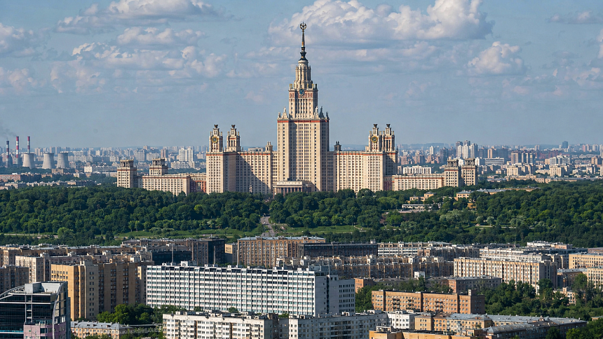
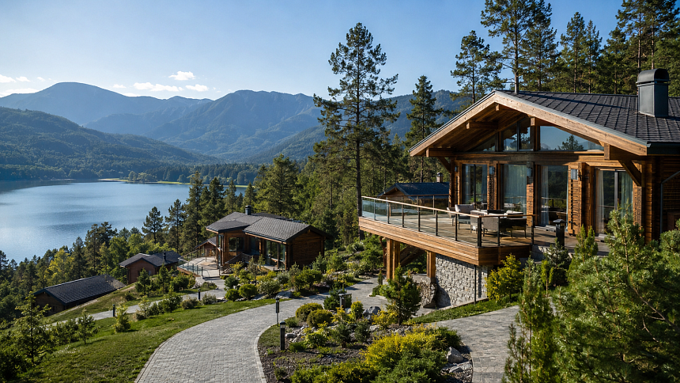
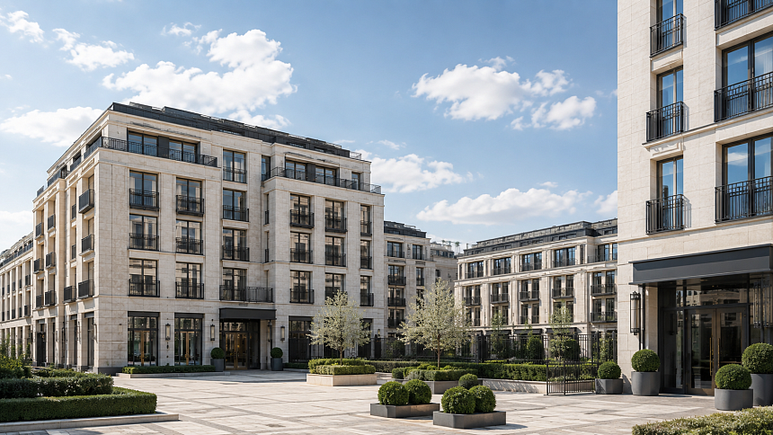
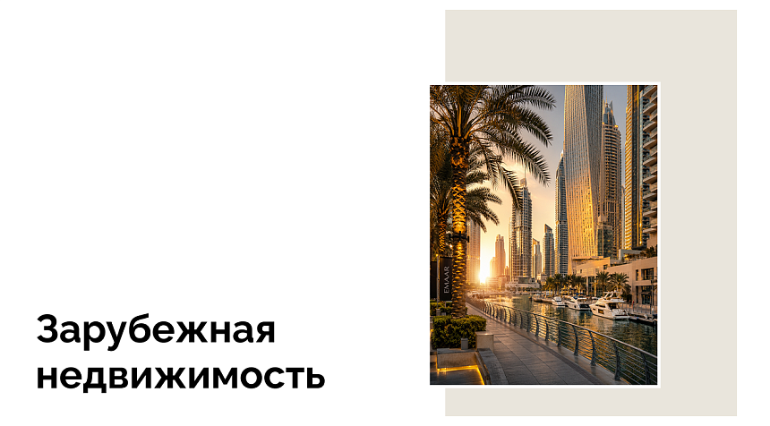
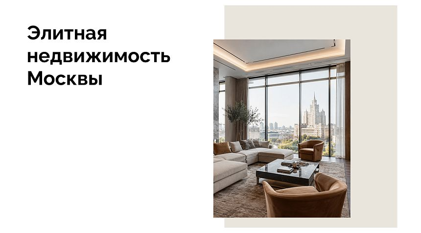

<div class="handoff-block" data-handoff-block="09-node-news" data-block-kind="node-news"><div ><div class="layout" data-v-47bd53e9=""><main class="layout__content" data-v-47bd53e9=""><div class="page catalog" data-v-f0be9abb=""><div id="catalog-news" class="catalog-page-section" data-v-f0be9abb=""><section class="node-news" data-node-news-ready="true"><div class="base-container"><div class="node-news__inner"><div class="node-news__header"><p class="node-news__eyebrow home-section-eyebrow barn-estate-name">Медиа BARN&nbsp;Estate</p><h2 class="node-news__title">Наши новости</h2></div><div class="splide node-news__slider splide--slide splide--ltr splide--draggable is-active is-overflow is-initialized" aria-label="Новости" id="splide02" role="region" aria-roledescription="карусель"><div class="splide__track splide__track--slide splide__track--ltr splide__track--draggable" id="splide02-track" aria-live="polite" aria-atomic="true" style="padding-left: 0px; padding-right: 0px;"><ul class="splide__list" id="splide02-list" role="presentation" style=""><li class="splide__slide is-active is-visible" id="splide02-slide01" role="group" aria-roledescription="новость" aria-label="1 из 6" style=""><article class="node-news__card"><a class="node-news__card-link" href="https://front.barnes.vsavr.ru/media/novosti/forbes-obnovil-mirovoy-reyting-gorodov-po-chislu-milliarderov-moskva-opustilas-na-trete-mesto/"><div class="node-news__content"><p class="node-news__category">Forbes обновил мировой рейтинг городов по числу миллиардеров: Москва опустилась на третье место</p><span class="node-news__read-more">Читать подробнее</span></div></a></article></li><li class="splide__slide is-visible is-next" id="splide02-slide02" role="group" aria-roledescription="новость" aria-label="2 из 6" style=""><article class="node-news__card"><a class="node-news__card-link" href="https://front.barnes.vsavr.ru/media/novosti/investitsii-v-turizm-altayskogo-kraya-vyrosli-v-poltora-raza-za-god/"><div class="node-news__content"><p class="node-news__category">Инвестиции в туризм Алтайского края выросли в полтора раза за год</p><span class="node-news__read-more">Читать подробнее</span></div></a></article></li><li class="splide__slide is-visible" id="splide02-slide03" role="group" aria-roledescription="новость" aria-label="3 из 6" style=""><article class="node-news__card"><a class="node-news__card-link" href="https://front.barnes.vsavr.ru/media/novosti/moskva-voshla-v-top-5-gorodov-mira-po-tsenam-na-elitnoe-zhile/"><div class="node-news__content"><p class="node-news__category">Москва вошла в топ-5 городов мира по ценам на элитное жилье</p><span class="node-news__read-more">Читать подробнее</span></div></a></article></li><li class="splide__slide" id="splide02-slide04" role="group" aria-roledescription="новость" aria-label="4 из 6" style="" aria-hidden="true"><article class="node-news__card"><a class="node-news__card-link" href="https://front.barnes.vsavr.ru/media/novosti/sostoyatelnye-pokupateli-stimuliruyut-rynok-brendovoy-nedvizhimosti-v-dubae/" tabindex="-1"><div class="node-news__content"><p class="node-news__category">Состоятельные покупатели стимулируют рынок брендовой недвижимости в Дубае</p><span class="node-news__read-more">Читать подробнее</span></div></a></article></li><li class="splide__slide" id="splide02-slide05" role="group" aria-roledescription="новость" aria-label="5 из 6" aria-hidden="true" style=""><article class="node-news__card"><a class="node-news__card-link" href="https://front.barnes.vsavr.ru/media/novosti/stoimost-nedvizhimosti-delyuks-segmenta-vyrosla-v-tretem-kvartale-2024/" tabindex="-1"><div class="node-news__content"><p class="node-news__category">Стоимость недвижимости делюкс-сегмента выросла в третьем квартале 2024</p><span class="node-news__read-more">Читать подробнее</span></div></a></article></li><li class="splide__slide" id="splide02-slide06" role="group" aria-roledescription="новость" aria-label="6 из 6" aria-hidden="true" style=""><article class="node-news__card"><a class="node-news__card-link" href="https://front.barnes.vsavr.ru/media/novosti/opublikovan-reyting-gorodov-po-urovnyu-restorannogo-obsluzhivaniya/" tabindex="-1"><div class="node-news__content"><p class="node-news__category">Опубликован рейтинг городов по уровню ресторанного обслуживания</p><span class="node-news__read-more">Читать подробнее</span></div></a></article></li></ul></div></div><div class="node-news__footer"><div class="node-news__nav"><button type="button" class="node-news__nav-btn" disabled="" aria-label="Предыдущие новости"><span class="ui-icon ui-icon-current node-news__nav-icon"><svg width="11" height="22" viewBox="0 0 11 22" fill="none" xmlns="http://www.w3.org/2000/svg">
<path d="M9.6582 21.3262L0.658204 10.8262L9.6582 0.326171" stroke="#656462"></path>
</svg>
</span></button><button type="button" class="node-news__nav-btn" aria-label="Следующие новости"><span class="ui-icon ui-icon-current node-news__nav-icon"><svg width="11" height="22" viewBox="0 0 11 22" fill="none" xmlns="http://www.w3.org/2000/svg">
<path d="M0.379883 21.3262L9.37988 10.8262L0.379884 0.326171" stroke="#656462"></path>
</svg>
</span></button></div><a class="ui-more-link node-news__action" href="https://front.barnes.vsavr.ru/media/tag/zarubezhnaya-nedvizhimost/"><!--[--><span class="ui-more-link__label"><!--[-->Читать все новости<!--]--></span><span class="ui-more-link__icon" aria-hidden="true"><svg viewBox="0 0 16 16" focusable="false"><path d="M3 13 13 3M5 3h8v8" fill="none" stroke="currentColor" stroke-linecap="round" stroke-linejoin="round" stroke-width="1.25"></path></svg></span><!--]--></a></div></div></div></section></div></div></main></div></div></div>
